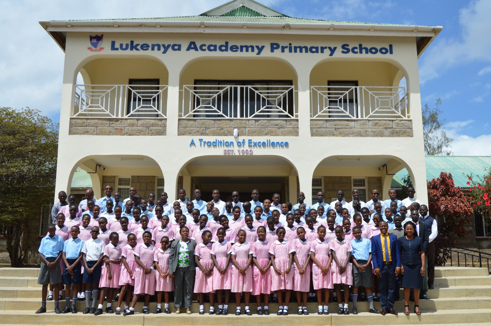

My Childhood in Nairobi
Early Years (2004-2007)

Born in Nairobi in 2004, my early childhood was filled with joy and excitement. Growing up in Kenya's capital exposed me to diverse cultures and experiences that shaped my worldview.
Primary School Days (2007-2015)

Attending Lukenya Primary School from 2007 to 2015, I developed my first interests in technology and problem-solving. These formative years laid the foundation for my academic journey.